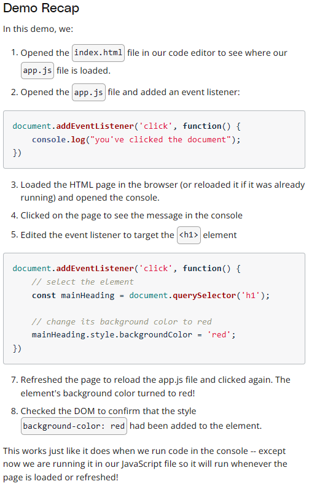

Creating Content with JavaScript
What is an event
An event is like an announcement. When an event happens, the browser will make an "accouncement" and we can use JavaScript to listen for and respond to the "announcement".
Seeing an Event
Chrome browser has a special monitorEvents() function that will let us see different events as they occur.
The monitorEvents() function will keep spitting out all events happening on the targeted element until the page is refreshed (or closed). Alternatively, Chrome does offer a function, .unmonitorEvents() that will turn off announcing events for the targeted element.


Note: monitorEvents() is used for development/testing purposes and is not intended for production.
Event Targets
The Node Interface inherits from the EventTarget Interface
(See 'Document Object Model' notes for information on Node Interface and Element Interface)

EventTarget is an interface implemented by objects that can receive events and may have listeners for them
------------------and------------------
Element, document, and window are the most common event targets, but other objects can be event targets too.
Source: MDN EventTarget Page
The EventTarget is at the top of the chain. This means that it does not inherit any properties or methods from other interfaces;
however, every other interface inherits from it and therefore contain its properties and methods.
This means each of the following is an "event target":
- The document page
- A paragraph element
- A video element
- etc...
Both the document object and any DOM element can be an event target because they inherit from the EventTarget Interface.
individual element > inherits from > Element Interface > inherits from > EventTarget Interface
document object > inherits from > Document Interface > inherits from > EventTarget Interface
EventTarget Interface does not have any properties and only three methods:
- .addEventListener()
- .removeEventListener()
- .dispatchEvent()
Listening for Events
psuedo-code to explain .addEventListener:

An event listener needs three things:
- an event target - this is called the target
- the type of event to listen for - this is called the type
- a function to run when the event occurs - this is called the listener
The <event-target> (the target) goes right back to document object, a <p> element, etc...
The <function-to-run-when-an-event-happens (the listener) is a function to run when the event actually occurs.
event listener from pseudo-code earlier to a real example:

- the target is the first <h1> element on the page
- the event type to listen for is a "click" event
- The listener is a function that logs to console: "The heading was clicked!"
Add an Event Listener
Project starter code: https://github.com/udacity/course-JS-and-the-DOM
More Events to Listen To
There is a full list of all possible events to listen for: MDN Event Reference
Removing an Event Listener
The .addEventListener() event will listen for and respond to all click events.
The new version of .addEventListener() specification does allow for an object to be passed as a third parameter.
This object may be used to configure how .addEventListener() method behaves.
There is an option to listen for a single event; however, this configuration object is not widely supported yet.
psuedo-code to explain .removeEventListenter():

Remember, the listener function must be the exact same function as the one used in the .addEventListener() call, not just an identical looking function.

This works because .addEventListener() and .removeEventListener():
- have the same target
- have the same type
- and pass the exact same listener
An exmaple of using .removeEventListener() incorrectly:

Why does this NOT work:
- both .addEventListener() and .removeEventListener() have the same target
- both .addEventListener() and .removeEventListener() have the same type
- .addEventListener() and .removeEventListener() have their own distint listener funtions... They do not refer to the exact same function (This is the reason the event listener removal fails)
Two functions can look the same, but live in two different places in memory.
When writing code: "..., function myEventListeningFunction() {...});", the second function was stored in a different location in memory. This is similar to a resturant chain; If you place an order at one pizza place, and drive to a different pizza place instead of the one you ordered from, they will not have your order available.
Event Phases
There are three different event phases during the event's lifecycle. The phases occur in order:
- the capturing phase
- the at target phase
- the bublling phase
Most event handlers run during at target phase. The event arrives at the button (its target), and there's only a handler for it right there, so the event handler gets run.
Sometimes there's a collection of items -- such as a list -- and want to have ONE handler cover every item (and still have the option of individual handlers for some items). By default, if clicking on a child item while the handler doesn't intercept the click, the event will "bubble" upward to the parent, and keep bubbling until something handles it or it hits the document.
The capturing phase lets the parent intercept an event before it reaches a child.